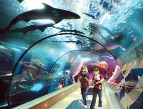

Los acuarios públicos o aquarium (en su original latino), son instalaciones abiertas al público para
ver especies acuáticas en acuarios. La mayor parte de los acuarios públicos presentan una determinada
cantidad de tanques más pequeños, así como uno o más depósitos mayores. Los depósitos más grandes tienen
una capacidad de varios millones de litros de agua y pueden albergar especies grandes, incluyendo delfines,
tiburones o ballenas. Los animales semiacuáticos (nutrias, pingüinos, etc.) pueden ser albergados también
por acuarios públicos.
Desde el punto de vista operacional, un acuario público es similar en muchos aspectos a un zoológico o museo.
Un buen acuario tendrá exposiciones especiales para atraer a los visitantes, además de su colección permanente.
Unos cuantos tienen su propia versión de “zoo para tocar”; por ejemplo, el Monterey Bay Aquarium, en California,
tiene un depósito superficial lleno de tipos comunes de rayas, y el público puede “tocar” sus pieles coriáceas
cuando pasan.
Los acuarios públicos o aquarium (en su original latino), son instalaciones abiertas al público para
ver especies acuáticas en acuarios. La mayor parte de los acuarios públicos presentan una determinada
cantidad de tanques más pequeños, así como uno o más depósitos mayores.